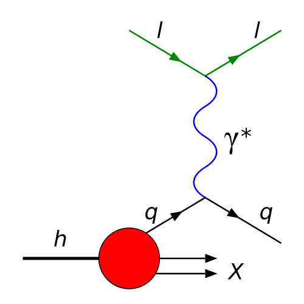

class: center, middle # Machine-Provable Physics Knowledge ## Using Lean for Subatomic Physics ### A Program for Verified ~~Computational~~ Physics --- # What is Mathematical Proving? Mathematical proofs establish **absolute certainty** that statements are true. ## Example: Infinitude of Primes **Theorem** (Euclid, ~300 BCE): There are infinitely many prime numbers. **Human proof** (by contradiction): 1. Assume finitely many primes: p₁, p₂, ..., pₙ 2. Construct N = (p₁ × p₂ × ... × pₙ) + 1 3. N is not divisible by any pᵢ (leaves remainder 1) 4. Either N is prime, or N has a prime factor not in our list 5. **Contradiction!** ∴ There must be infinitely many primes **Alternative formulation**: For any number n, we can find a prime > n This is what we'll prove in Lean on the next slide → --- # Mathematical Proving (continued) ## In Lean 4: Machine-Verified (condensed) ```lean import Mathlib.Data.Nat.Prime /-- The factorial, defined recursively, with custom notation -/ def factorial : Nat → Nat | 0 => 1 | n+1 => (n + 1) * factorial n notation:10000 n "!" => factorial n /-- The factorial is always positive -/ theorem factorial_pos : ∀ n, 0 < n ! := by intro n; induction n <;> grind [factorial] /-- ... and divided by its constituent factors -/ theorem dvd_factorial : ∀ n, ∀ k ≤ n, 0 < k → k ∣ n ! := by intro n; induction n <;> grind [Nat.dvd_mul_right, Nat.dvd_mul_left_of_dvd, factorial] /-- We show that we find arbitrary large (and thus infinitely many) prime numbers, by picking an arbitrary number `n` and showing that `n! + 1` has a prime factor larger than `n`. -/ theorem InfinitudeOfPrimes : ∀ n, ∃ p > n, IsPrime p := by intro n have : 1 < n ! + 1 := by grind [factorial_pos] obtain ⟨p, hp, _⟩ := exists_prime_factor (n ! + 1) this suffices ¬p ≤ n by grind intro (_ : p ≤ n) have : 1 < p := hp.1 have : p ∣ n ! := dvd_factorial n p ‹p ≤ n› (by grind) have := Nat.dvd_sub ‹p ∣ n ! + 1› ‹p ∣ n !› grind [Nat.add_sub_cancel_left, Nat.dvd_one] ``` .small[ **Proof steps verified**: m > 1 ✓, prime p divides m ✓, p ≤ n → contradiction ✓, therefore p > n ✓ ] --- # Why Physics Needs This Physics calculations involve: - Complex coordinate transformations - Multi-step derivations - Edge cases and special conditions - Numerical approximations **Traditional approach**: Manual derivation + hope reviewers catch errors **Problems**: - Errors propagate through literature (wrong formulas get cited) - Calculations too complex for humans to fully verify - Implementation bugs go undetected **Solution**: Machine-verified physics + AI collaboration - **Prove properties once**, use everywhere with confidence - **AI can propose** new theorems, relations, and hypotheses - **Machine verifies** that AI-generated proofs are correct - **Automatic discovery** of physical relations and consistency checks - Catch logical errors before they spread .highlight[**Game changer**: AI explores, Lean guarantees correctness] --- # DIS Kinematics: The Physics **Deep Inelastic Scattering**: electron + proton → electron' + X .center[<p></p>] Key kinematic variables describe the collision: - **Q²**: virtuality of exchanged photon (momentum transfer squared) - **x**: Bjorken scaling variable (momentum fraction) - **y**: inelasticity (energy transfer fraction) - **W²**: invariant mass squared of hadronic system .medium[ **Physics insight**: These variables are *redundantly determinable* - Can reconstruct from different particle combinations - Different methods work better in different kinematic regions - Consistency relations must hold! ] --- # DIS Kinematics: The Mathematics ## Fundamental Relations For electron-proton scattering (beam energy Eₑ, proton mass Mₚ): **Electron method** (uses scattered electron): ```lean -- Q² from scattered electron angle and energy def Q2_electron (E_e : ℝ) (E_e' : ℝ) (θ : ℝ) : ℝ := 4 * E_e * E_e' * (sin (θ/2))^2 -- Inelasticity from energy loss def y_electron (E_e : ℝ) (E_e' : ℝ) : ℝ := 1 - E_e' / E_e -- Bjorken x from Q² and y def x_electron (E_e : ℝ) (E_e' : ℝ) (θ : ℝ) (M_p : ℝ) : ℝ := let Q2 := Q2_electron E_e E_e' θ let y := y_electron E_e E_e' let s := 2 * M_p * E_e + M_p^2 Q2 / (s * y - M_p^2 * y) ``` **Sigma method** (uses hadronic final state): ```lean -- Sum over all hadrons: Σ(E - pz) def Sigma (hadrons : List Particle) : ℝ := hadrons.foldl (fun acc h => acc + h.E - h.p_z) 0 -- Inelasticity from hadronic system def y_Sigma (hadrons : List Particle) (E_e : ℝ) (M_p : ℝ) : ℝ := let Σ := Sigma hadrons Σ / (Σ + 2 * E_e * M_p) -- Q² from Sigma and other variables def Q2_Sigma (hadrons : List Particle) (E_e : ℝ) (M_p : ℝ) : ℝ := let y := y_Sigma hadrons E_e M_p let p_T_sum := hadrons.foldl (fun acc h => acc + h.p_T^2) 0 p_T_sum / (1 - y) ``` --- # DIS Kinematics: Verified Consistency ## The Power of Proof **Theorem**: All reconstruction methods are mathematically consistent ```lean lemma xBj_pos (g : Bilin V) (K : DisKinematics V) (h : BasicAssumptions g K) : 0 < K.xBj g := by unfold xBj have hden : 0 < 2 * g K.p K.q := by nlinarith [h.p_dot_q_pos] exact div_pos h.q2_pos hden lemma xBj_le_one (g : Bilin V) (K : DisKinematics V) (h : BasicAssumptions g K) : K.xBj g ≤ 1 := by unfold xBj have hden : 0 < 2 * g K.p K.q := by nlinarith [h.p_dot_q_pos] exact (div_le_iff₀ hden).2 (by simpa using h.q2_le_two_p_dot_q) theorem dis_kinematics_consistency (E_e E_e' : ℝ) (θ : ℝ) (E_h : ℝ) (p_h_z : ℝ) (h_positive : 0 < E_e ∧ 0 < E_e' ∧ 0 < E_h) : let Q2_e := Q2_electron E_e E_e' θ let y_e := y_electron E_e E_e' let y_h := y_hadron E_h p_h_z E_e M_p let x_e := x_from_Q2_y Q2_e y_e (s E_e M_p) M_p -- Under ideal conditions (perfect detector, no radiation): abs (y_e - y_h) < ε ∧ x_e * y_e * (s E_e M_p) = Q2_e + M_p^2 * x_e * y_e := by -- Proof ensures mathematical consistency ... ``` **Guarantee**: If this compiles, the relations are mathematically correct! --- # Integration: Callable Physics Functions ## From Proof to Production The verified formulas become **trusted computational libraries**: ```python # Python interface (via foreign function interface) from physlib import DISKinematics # Initialize with beam parameters dis = DISKinematics(E_beam=18.0, M_proton=0.938) # Reconstruct kinematics from scattered electron kinematics = dis.reconstruct_electron_method( E_scattered=12.5, theta=0.25 # radians ) print(f"Q² = {kinematics.Q2:.2f} GeV²") print(f"x = {kinematics.x:.4f}") print(f"y = {kinematics.y:.3f}") # Mathematical guarantees built-in: assert dis.verify_consistency(kinematics) # Always True! ``` **Key benefit**: The underlying mathematics is *proven correct* --- # Integration: Where This Matters ## Real-World Applications **Experimental data analysis**: - Ensure consistency across analysis chains - Automatic validation of kinematic reconstruction - Catch detector resolution effects **Monte Carlo simulation validation**: - Verify event generators obey conservation laws - Check cross-section calculations - Validate phase space boundaries **Education and training**: - Students learn *correct* formulas - Interactive exploration with guaranteed correctness - "If it compiles, it's right" **Cross-experiment reproducibility**: - Shared, verified definition of kinematic variables - No ambiguity in formula interpretation - Direct comparison across facilities (JLab, CERN, EIC) --- # Beyond Algebra: Proving Physics Theory ## Lorentz Group Structure Theorems Machine verification proves **deep theoretical relationships**: ```lean -- Lorentz group forms a mathematical group theorem lorentz_group_closure {Λ Λ' : Matrix (Fin 1 ⊕ Fin d) (Fin 1 ⊕ Fin d) ℝ} (hΛ : Λ ∈ LorentzGroup d) (hΛ' : Λ' ∈ LorentzGroup d) : Λ * Λ' ∈ LorentzGroup d := by rw [mem_iff_dual_mul_self, dual_mul] trans dual Λ' * (dual Λ * Λ) * Λ' · noncomm_ring -- Matrix algebra automatically verified · rw [(mem_iff_dual_mul_self).mp hΛ] simp [(mem_iff_dual_mul_self).mp hΛ'] -- Inverse transformation also Lorentz theorem lorentz_dual_mem (h : Λ ∈ LorentzGroup d) : dual Λ ∈ LorentzGroup d := by rw [mem_iff_dual_mul_self, dual_dual] exact mem_iff_self_mul_dual.mp h ``` .small[ **Physical insight**: Lorentz transformations compose, have inverses, preserve spacetime interval **Proof guarantees**: Group axioms verified ✓, Minkowski metric preservation ✓, no special cases missed ✓ ] --- # The Road Ahead ## Building a Verified Physics Ecosystem **Current status**: Proof-of-concept with DIS kinematics - Basic kinematic relations verified - Lorentz transformations proven - Conservation laws mechanized **Near-term goals**: - Radiative corrections (bremsstrahlung, vertex corrections) - Detector acceptance and resolution modeling - Statistical uncertainty propagation **Long-term vision**: - **Comprehensive physics library** (Physlib) - Covering: particle physics, nuclear physics, QED/QCD - Integration with: SciML, differentiable programming - **Trusted computational foundation** for physics research .highlight[**The promise**: Physics calculations you can *absolutely* trust] --- class: center, middle # Conclusion ## Machine-Provable Physics with Lean ✓ **Mathematical rigor** meets computational physics ✓ **Verified correctness** from first principles to implementation ✓ **Reusable, composable** physics knowledge ✓ **Bridge** between theory, computation, and experiment --- ### Join the effort: [github.com/leanprover-community/physlib](https://github.com/leanprover-community/physlib) .center[*Making physics calculations as reliable as prime number theorems*]